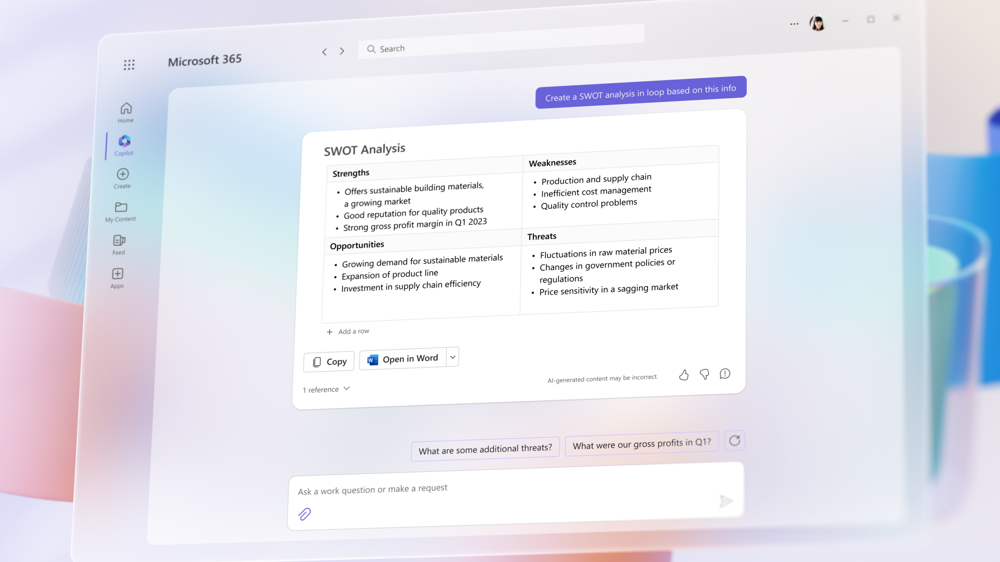
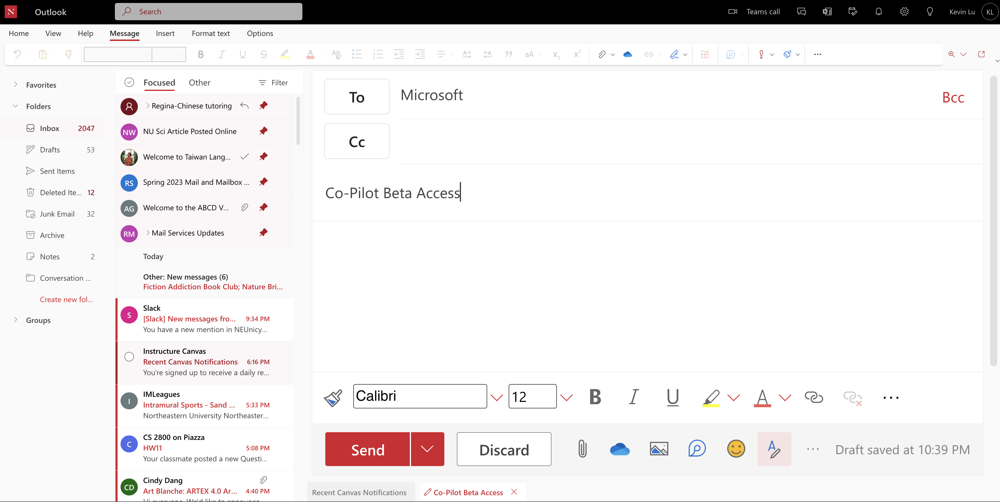

Springing Off Chat-GPT

ChatGPT opened to the public on November 30, 2022. The AI chat machine, backed by Microsoft as an investor, has attracted a lot of attention since its launch. In its first two months, ChatGPT was used by more than 100 million users, giving Microsoft a glimpse of how ChatGPT could play an important role in the future of our daily lives.
Microsoft made an announcement on their website on March 16, 2023, stating that they plan t
o incorporate ChatGPT into their office software in the coming days.
ChatGPT opened to the public on November 30, 2022. The AI chat machine, backed by Microsoft as an investor, has attracted a lot of attention since its launch. In its first two months, ChatGPT was used by more than 100 million users, giving Microsoft a glimpse of how ChatGPT could play an important role in the future of our daily lives.
Microsoft made an announcement on their website on March 16, 2023, stating that they plan t
o incorporate ChatGPT into their office software in the coming days.
The program will be called
Microsoft 365 Copilot, which combines Large Language Models (LLMs) with business data and Microsoft
365 applications.
The Copilot is powered by OpenAI’s GPT-4 technology and will feature in the sidebar as a chatbot in
Microsoft 365 apps. It aims to boost productivity, creativity, and skills by transforming words into a potent productivity tool. Microsoft 365 Copilot is
not just a novel work methodology, but a tool to revolutionize productivity.
With its recent 1.5 billion investment in OpenAI's ChatGPT, Microsoft is releasing a new co-pilot designed for its office 360 products.
By utilizing the copilot function available in Microsoft Word, you can benefit from its capabilities to write, edit, summarize, and create documents.
asdf
An Analysis of Microsoft's investment in OpenAI
In terms of Microsoft Outlook, we often struggle with the reading and response time generated by the sheer volume of email in our daily life, but the Copilot feature in Outlook can help reduce the time we spend on email triage and increase our productivity in communication.
It can summarize complex email threads involving multiple people, allowing us to grasp different perspectives and unanswered questions. The feature also offers prompts and toggles that can be used to quickly respond to emails or turn quick notes into professional messages using content from across Microsoft 365.
WATCH OUT: Copilot cannot always correctly understand contexts and dates - always check for accuracy.
For example, you can write in the copilot function: “Write an email to Microsoft for beta access to their copilot.”and it will give us the following response:
